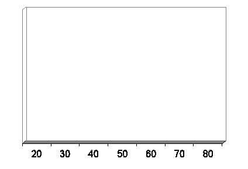

FİNANSAL YAŞAM DÖNGÜSÜ
Şansa inanırım, daha fazla çalıştığımda daha şanslı olurum. Anonim
İnsanların ihtiyaçları ve hedefleri, içinde bulundukları yaş grubuna göre farklılık gösterir. Finansal yaşam döngüsü, yaş grubuna göre insanların hangi finansal ihtiyaçlarını karşıladıklarını gösteren ve planlama yaparken bize kolaylık sağlayan tablodur. Aşağıda Kişisel Finans isimli eserin sahibi Arthur Keown tarafından hazırlanmış tabloyu bulacaksınız. Bu tablo, bize hangi yaş grubunda nelerle karşılaşacağımız hakkında bilgi verir ve bu doğrultuda önceden planlama yapmamızı kolaylaştırır.
Bir Bireyin Finansal Yaşam Döngüsü

Yukarıdaki tabloda da görüldüğü üzere ortalama bir insanın finansal yaşam döngüsü üç evreden oluşur. Ortalama bir insan dememizin sebebi, herkesin sosyal konumunun ve bireysel özelliklerinin farklı olmasıdır. Evlilik durumu (bekâr, evli, dul, boşanmış), iş durumu (işveren, işsiz, işçi), ekonomik yapı (enflasyon, işsizlik oranı), yaş, bağımlı kişi sayısı (eş, çocuklar, anne-baba) ve miras kişiden kişiye farklılık gösterir. Şimdi bu evreleri sırasıyla inceleyelim:
Finansal yaşam döngüsü tablosundan çıkarabileceğimiz sonuç, finansal planlama yapmaya mümkün olan en erken zaman diliminde başlamak ve tasarruf etme alışkanlığını bir yaşam biçimi haline getirmektir. Unutmayın, başlamak için en doğru zaman şu andır. "Şimdi başlayın!" ifadesini yazılarımda sıklıkla okuyacaksınız.
Finansal planlama ve finansal yaşam döngüsünün neden çok önemli olduğunu bir örnekle inceleyelim. Bir çocuk sahibi olmanın vereceği haz ve mutluluk duygusunu, herhangi bir para birimiyle karşılaştırmak veya ölçmek mümkün değildir. Sizi biraz düşündürmek istiyorum dolayısıyla aşağıdaki tabloyu incelemekte fayda var. Tabloda, bir çocuğa hangi yaş grubunda yılda ortalama ne kadar harcama yapıldığını ve çocuk sahibi olunmasa o paralarla neler yapılabileceğinin karşılaştırmalı incelemesini bulacaksınız:
Yukarıdaki tablonun son derece iyimser olarak hazırlandığını,, anne babalar kabul edecektir. Mesela lise giriş sınavlarına hazırlık tabloda yer almıyor, çocuk özel bir okulda okusaydı yapılacak masraflar, yıllık harçlık ve gıda giderleri yer almıyor. Belki de her anne babanın en büyük keyfi olan çocuklarını evlendirmek bile tabloya dahil edilmedi. Yine tablodaki örnekte çocuğunuzun yurt dışında öğrenim görmek istemeyeceği varsayımından hareket ettik; öyle bir niyeti varsa üniversite giderlerini sadece üçle çarpmanız yeterli olacaktır! Türkiye Aile Planlaması Derneği soruna bence bu yönüyle yaklaşsa çok daha kısa zamanda çok daha etkili sonuçlar elde edebilir!
Bir Çocuk Yetiştirmenin Maliyeti | ||||
Yaş | Çocuğa Yapılan Harcama | Kendiniz İçin Yapabileceğiniz Harcama | ||
0+ | Doğum masrafları | 1000 TL | Kaplıcada tatil | 1000 TL |
1 | Bakıcı masrafları | 12.000 TL | Altın Rolex Saat | 12.000 TL |
3 | Kreş | 2.400 TL | Paris’te bir hafta tatil | 1.900 TL |
5 | Bir aylık yaz kampı | 1.000 TL | Palandöken’de hafta sonu kayak tatili | 800 TL |
6 | Sünnet düğünü | 15.000 TL | 1979 model Porcsche 924 Coupe | 10.000 TL |
7 | Giyim giderleri | 1.300 TL | Vakko elbise | |
8 | Kişisel gelişim kursları | 1.800 TL | Kişisel gelişim kursları | 1.800 TL |
10 | Yaz kampı | 1.500 TL | Spor kulübü üyeliği | 1.400 TL |
11 | Çocuk psikoloğu | 3.000 TL | Estetik ameliyatı | 2.500 TL |
12 | Diş teli - protez | 2.500 TL | Gemiyle ikinci balayı | 2.500 TL |
14 | Erkek/kız arkadaş | 3.000 TL | Gece görüş dürbünü! | 3.500 TL |
17 | Üniversiteye hazırlık kursları | 7.000 TL | Ev mobilyalarının değişimi | 6.000 TL |
18 | Özel üniversite öğrenim bedeli | 20.000 TL | Yelkenli tekne | 20.000 TL |
21 | Mezuniyete kadar toplam harcama | 60.000 TL | İstanbul Riva’da bir arsa | 60.000 TL |
Bu tabloyu sizlerle paylaşmamın sebebi tabii ki aile planlamasına katkıda bulunmak değil. Sadece finansal planlamanın geleceğimiz olarak gördüğümüz çocuklarımız ve kendimiz için ne kadar önemli olduğunu vurgulamak istiyorum. Tabloda belirtilen rakamları birileri size hibe etmeyecek, buna emin olabilirsiniz. Zengin insanlarla ilgili bir istatistik paylaşayım sizlerle. Dünya üzerindeki dolar milyoneri olan insanların %10’u miras yoluyla, %20’si profesyonel çalışmalarıyla, %70’i ise kendi işini kurup yöneterek zengin olmuş. Demek ki şanslı %10’un içinde değilseniz, tabloda belirtilen rakamları kendiniz kazanmalısınız! Bu arada unutmadan söyleyeyim, yukarıdaki rakamlar ortalama rakamlardır, kişiden kişiye değişebilir; ancak değişmeyen şey, tek bir çocuk için hazırlanmış olduğudur. Çocuk sayısı arttıkça harcamalar da katlanarak artacaktır.